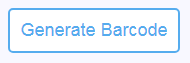

1-Enter the required page:
You can change the settings on the left to generate a custom barcode.
2-Enter the text to Generate:
Enter the content to Generate in Qr Code in the following text box.

3-Select format and mode:
4-Width and height:
Enter Width and Height in the text box or select at the Blue Bar.
5-Color of the line and the background:
Click the black dot to select the Line Color of a QR Code to Generate, or click the white point to select the Color of the Background to Generate.

6-To hide the text uncheck "Show text":
7-Generate the QR Code:
Click the "Generate QR Code" button to generate the QR Code.

8-Finally, you can download the QR code or print according to your choice: